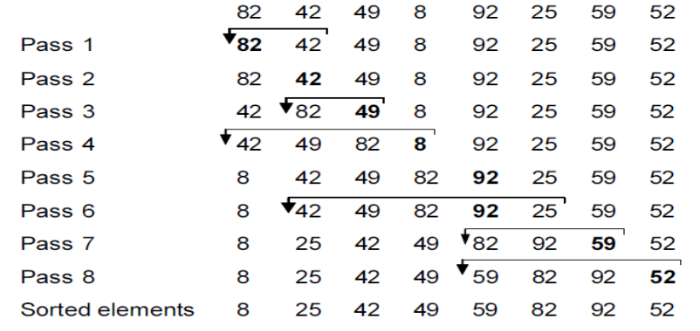

Let us take an example of the following elements.
82 42 49 8 92 25 59 52Here apply the insertion sort algorithm to sort the elements.
def insertion_sort(list):
for i in range(1,len(list)):
key = list[i]
j = i
while j>0 and list[j-1]>key:
list[j]=list[j-1]
j = j-1
list[j]=key
list = [82,42,49,8,92,25,59,52]
insertion_sort(list)
print(list)